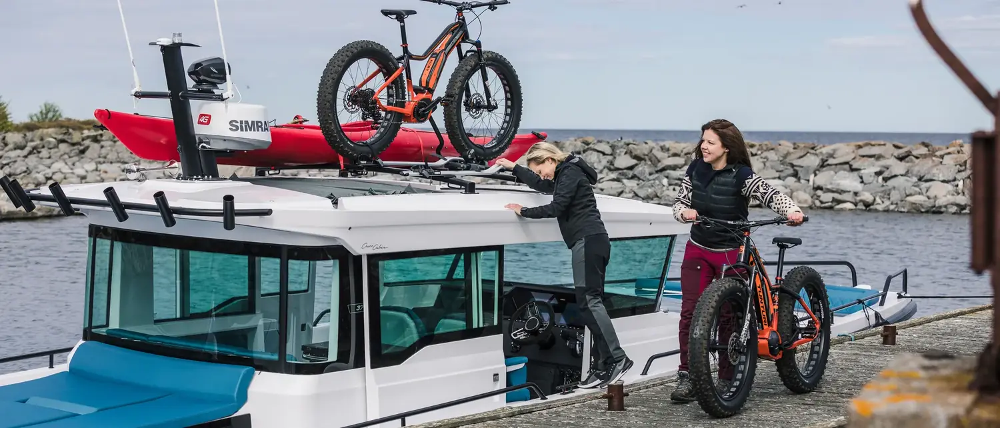
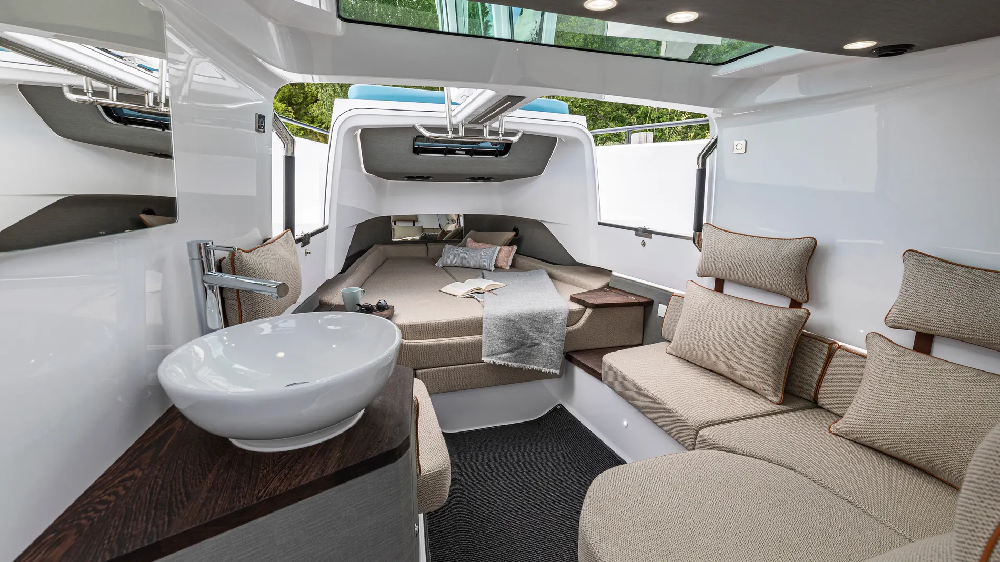
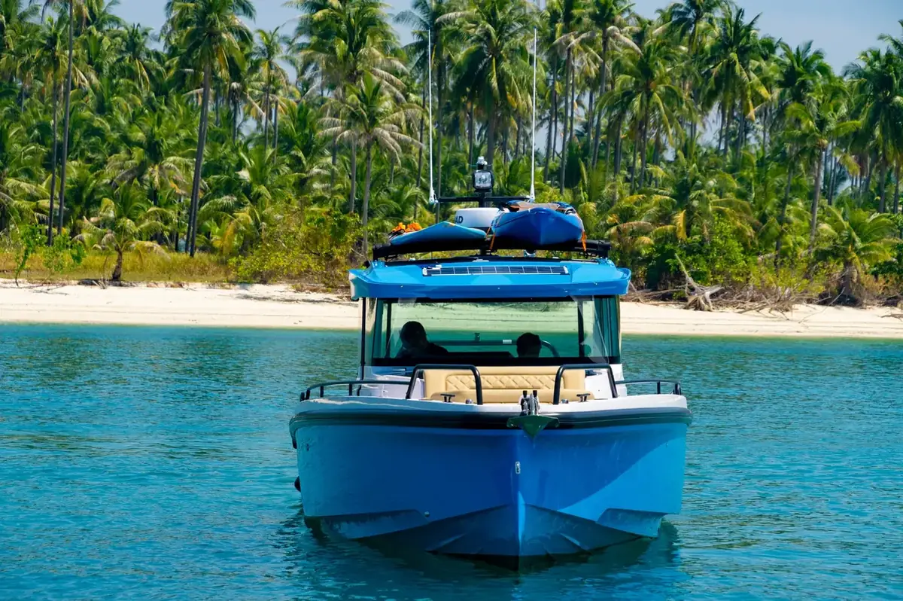
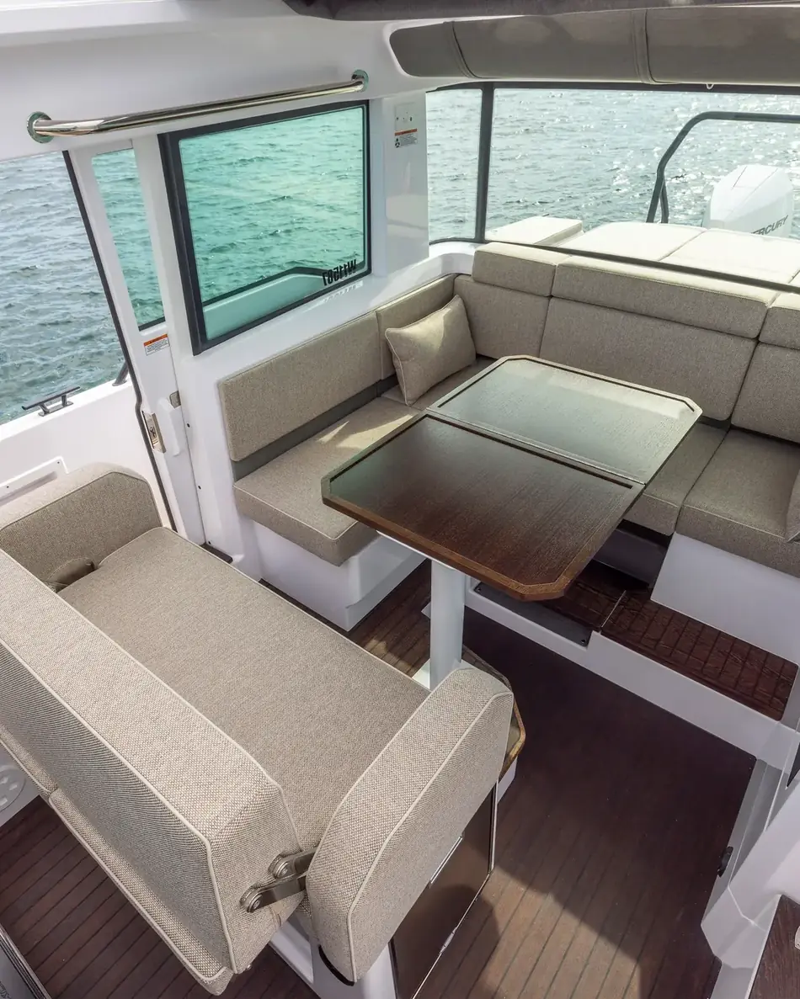
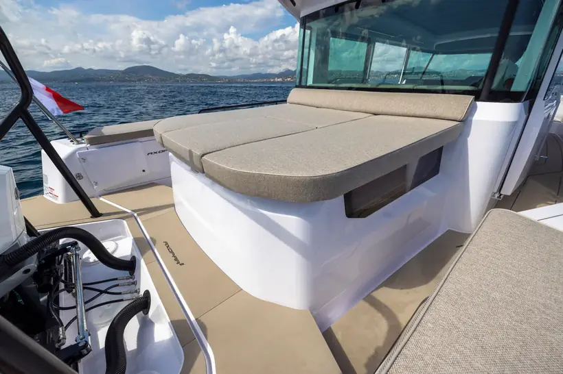
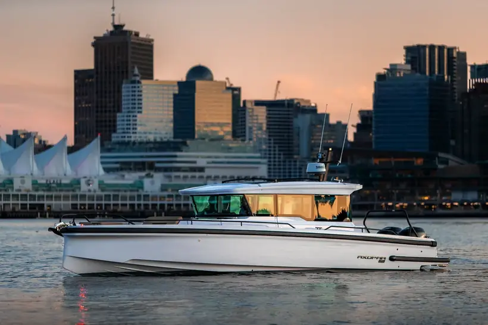
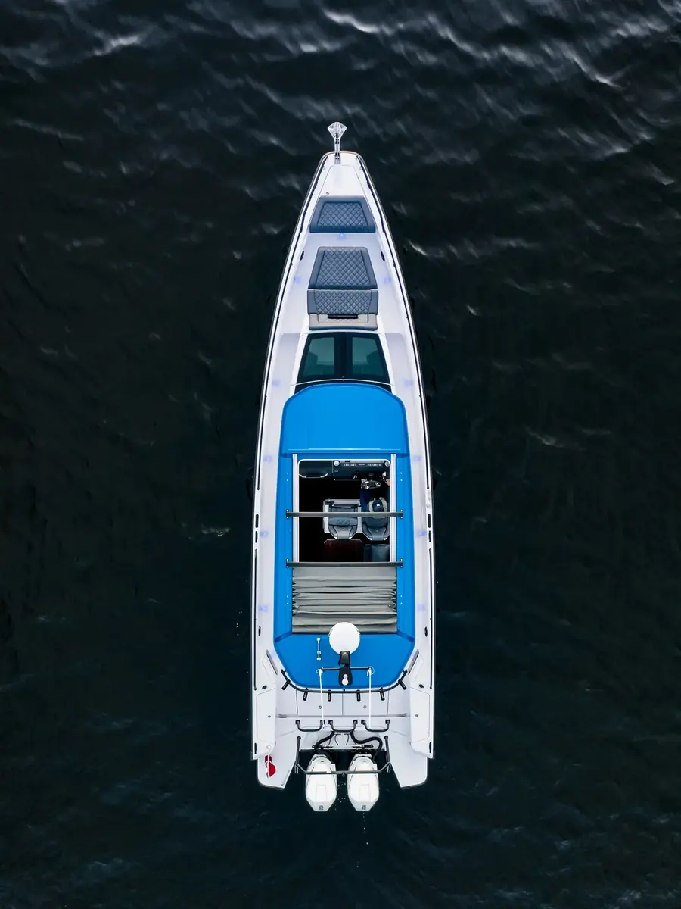
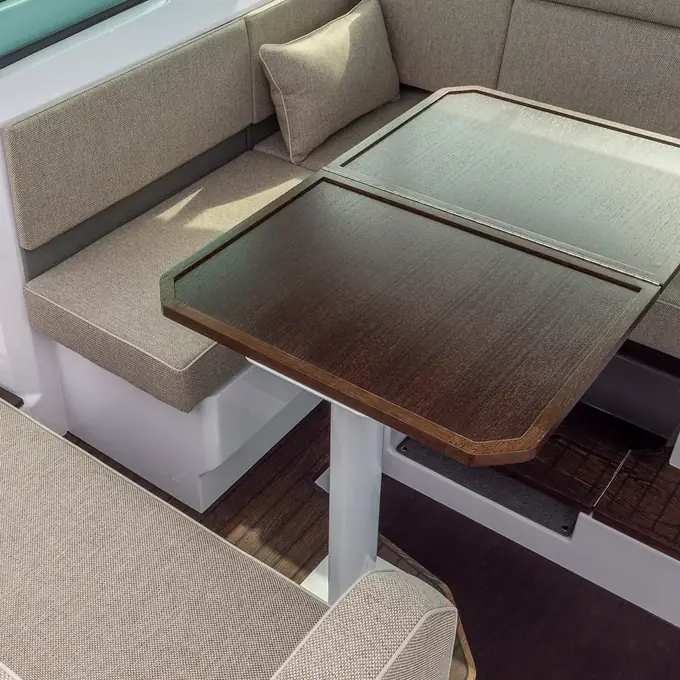
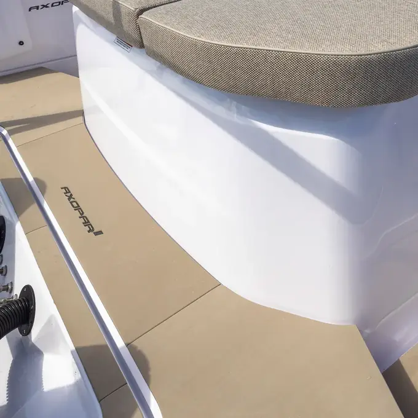
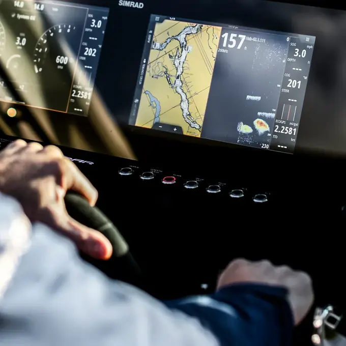

Saliste a las seis.
A las once entró viento del sur.
Nadie propuso volver.


Fotografía · Axopar
Axopar · Finlandia
El clima cambia.
Tus planes no.
Cabina cerrada, casco de doble step y autonomía para salir cuando el resto se queda en tierra.
Saliste a las seis.
A las once entró viento del sur.
Nadie propuso volver.

La mayoría de los barcos rápidos son de temporada. Se usan cuando el clima acompaña y esperan en el muelle cuando no. El 37 XC borra esa condición: timonera cerrada y climatizada, visibilidad de 360 grados, puerta lateral para salir a cubierta sin cruzar la cabina.
Navegas en pareja o con tres personas más. Haces tramos largos. Duermes a bordo un par de noches sin que se convierta en una expedición. El casco de doble step sostiene 30 nudos con mar formado, y llegas sin haber castigado a nadie.
Funciona en fiordos y canales, donde el clima cambia sin aviso y el calado bajo abre fondeaderos. En lagos, donde alarga la temporada más allá del verano. Y mar adentro, donde la categoría B y el casco hacen la diferencia.

Cada navegación pide un barco distinto. Cuéntanos cómo y dónde navegas.
Habla con un especialista →Fondeas, apagas motores y la timonera deja de ser un puesto de mando. Cuatro asientos, calefacción, vidrios que no se empañan, una mesa que baja y se convierte en litera. Axopar la diseñó como living, porque ahí es donde efectivamente se pasa el día.
Atrás, la bañera bajo el techo extendido. Mesa de seis. Con el toldo cerrado sigue sirviendo con lluvia. Y la puerta lateral de babor, que se agradece cada vez que amarras: sales directo al costado, sin dar la vuelta.
Abajo, camarote de proa con cama doble y una segunda litera bajo la timonera. Baño separado con ducha. Alcanza para dormir dos o tres noches a bordo con comodidad real.

La timonera cerrada, con mesa convertible y salida lateral a cubierta.

Bañera de popa con solárium sobre el módulo

Cabina de proa con baño separado
Acceso lateral y portaequipajes de techo
Axopar nació para el Báltico: frío, corto y traicionero. Cada decisión de ingeniería responde a ese mar. En Chile, esa misma lógica se traduce en salir más veces al año y gastar menos cada vez.

Proa fina y casco angosto: la geometría que explica el rendimiento.
La calidad de un barco se nota en lo que tocas todos los días.



El tuyo se define antes de existir. Estas son las seis decisiones que más cambian el barco que vas a recibir.
2 × 300 hasta 2 × 400 hp Mercury Verado. La diferencia real no es velocidad punta: es cómo responde cargado y cuánto consume a crucero.
Bañera abierta, con cabina Aft Cabin o con módulo de cocina exterior. Define si el barco es de paseo, de pernoctar o de fondeo largo.
Simrad o Garmin, con o sin radar y piloto automático. Se especifica de fábrica: instalarlo después cuesta más y queda peor integrado.
Webasto diésel. En fiordos y en lagos de montaña no es un extra: es lo que mantiene el barco usable fuera de temporada.
Molinete, ancla y cadena dimensionados según dónde fondees. Un canal profundo no pide lo mismo que una bahía abrigada.
Teca sintética, tonos de casco y tapicería exterior. Importa para el uso diario y para el valor de reventa.
Oceanic representa a Axopar en Chile. Lo especificamos contigo, Axopar lo construye en Finlandia y nosotros lo entregamos nacionalizado, en el agua y listo para navegar.
Cómo navegas, dónde y con quién. De ahí sale si este es el barco o si hay otro en el portafolio que corresponde mejor.
Especificaciones según la ficha oficial de Axopar (modelo 2027). Los valores finales pueden variar según configuración y motorización.

Elige lo que más se parece a lo que tienes en mente. Ajustamos la conversación a eso.
Cualquiera sea tu caso, la configuración cambia. Cuéntanos y te respondemos con lo que corresponde.
Te respondemos con configuraciones, plazos reales y precio según lo que necesitas. Sin presión y sin secuencias automáticas.
Cotizar por WhatsApp o déjanos tus datos y te escribimos →